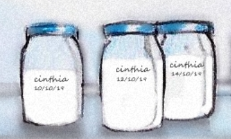
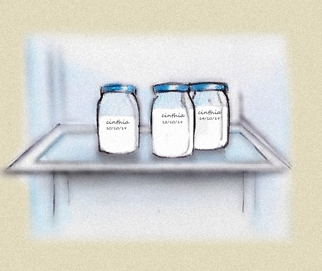

Guardando o leite


1 Identifique o frasco de vidro com a data e a hora que você retirou o leite do seu peito, assim você saberá por quanto tempo o leite está armazenado.
2 Coloque o frasco de vidro identificado na geladeira ou congelador.
3 O leite retirado pode ficar guardado por até 12h na prateleira mais próxima do congelador da geladeira e 15 dias no congelador ou freezer.
Se você tiver leite suficiente para o seu bebê, mas ainda sobrar muito leite doe aos Bancos de Leite, pois muitos bebês precisam de leite materno.